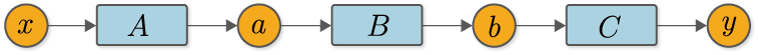
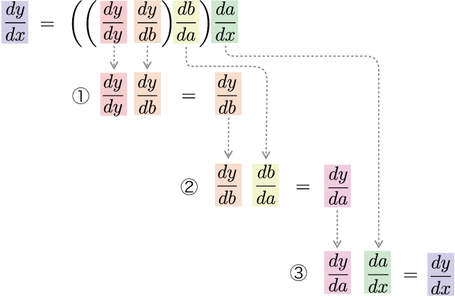
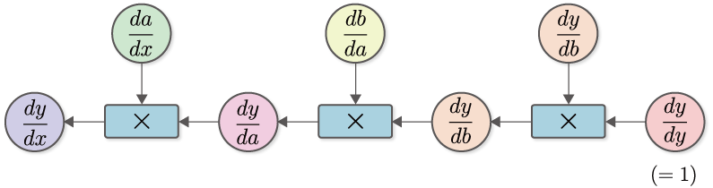
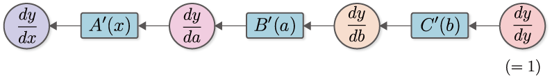
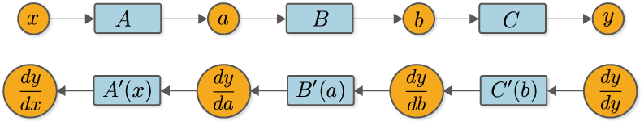

We were able to find the derivative by numerical differentiation. However, numerical differentiation have had problems in terms of computational cost and accuracy. Backpropagation solves both of those problems! In other words, it is possible to obtain the derivative more efficiently and with a smaller error value. This step does not implement backpropagation, but only explains the theory. Then the next step is to implement backpropagation.
The key to understanding backpropagation is the chain rule. The word “chain” describes how multiple functions are used in a chain. A chain rule indicates that the derivatives of multiple concatenated functions (composite functions) can be “decomposed” into the product of the derivatives of each of their constituent functions.
Let’s explain the chain rule with a concrete example. For example, we have a function \(y=F(x)\). And suppose that this function \(F\) is composed of three functions, \(a=A(x)\), \(b=B(a)\), and \(y=C(b)\). Incidentally, this function looks like Figure 5-1 when written as a computational graph.

Figure 5-1 Example of the composite function
In this case, the derivative of \(y\) with respect to \(x\) can be represented by Figure 5-1.
As Equation (5.1) shows, the derivative of \(y\) for \(x\) is represented by the product of the derivative of each function. In other words, the derivative of a composite function can be decomposed into the local derivative of each function. This is the chain rule. In addition, the chain rule represented by equation (5.1) can also be written by explicitly including \(\frac{dy}{dy}\), as follows
\(\frac{dy}{dy}\) is a derivative with respect to “myself” and its value will always be 1. Therefore, it is usual to omit the product of derivatives related to “myself” such as \(\frac{dy}{dy}\), but we will include it here in anticipation of the implementation of backpropagation.
NOTE
\(\frac{dy}{dy}\) is a derivative of \(y\) with respect to \(y\). In this case, if \(y\) changes only a certain small value, then \(y\), which is itself, also changes by the same amount. Therefore, the rate of change is always \(1\) for any function.
Let’s take a closer look at equation (5.2). Equation (5.2) implies that the derivative of the composite function can be decomposed into the product of the derivative of each function. However, it doesn’t specify about “in what order to multiply” it. Of course, you are free to decide on that point. So, let’s consider calculating in order from the output to the input direction, as shown in Equation (5.3).
As shown in Equation (5.3), it calculates the derivative from the output to the input - that is, in the opposite direction of the normal calculation. In this case, the flow of the calculation of Equation (5.3) is as shown in Figure 5-2.

Figure 5-2 Flow of calculation from the output side derivative
As shown in Figure 5-2, compute the derivatives in turn, multiplying from the output \(y\) in the direction of the input \(x\). By doing so, you will finally get \(\frac{dy}{dx}\). This calculation can be expressed in a “computational graph” as shown in Figure 5-3.

Figure 5-3 Computation graph for \(\frac{dy}{dx}\)
Let’s take a closer look at the computational graph in Figure 5-3. We start with \(\frac{dy}{dy} (=1)\) and calculate the product of \(\frac{dy}{db}\). where \(\frac{dy}{db}\) is the derivative of the function \(y=C(b)\). Therefore, we can write \(C'(b)\) by denoting the derivative of the function \(C\) by \(C'\), which is \(\frac{dy}{db}=C'(b)\). Similarly, \(\frac{db}{da}=B'(a)\) and \(\frac{da}{dx}=A'(x)\). With the above in mind, the computational graph in Figure 5-3 can be simplified and written as follows.

Figure 5-4 Computational graph of simplified inverse propagation (multiplication of \(A'(x)\) is simplified and represented by a node named “\(A'(x)\)”)
As shown in** Figure 5-4**, we will represent the product of a derivative as a single function node. This will make the flow of the derivative clearer. If you look at **Figure 5-4**, you can see that the “derivative for each variable of \(y\)” propagates from right to left. This is reverse propagation. The important point here is that the data being propagated is all “derivatives of \(y\)”. To be specific, we can see that \(\frac{dy}{dy}\), \(\frac{dy}{db}\), \(\frac{dy}{da}\), and \(\frac{dy}{dx}\) are all propagated by “the derivative of \(y\) on the xxx”.
NOTE
The reason for specifying the order of computation from the output to the input direction, as in Equation (5.3), is to propagate the derivative of \(y\). In other words, to treat \(y\) as an “important person”. If we were to do the calculations in order from input to output direction, the input, \(x\), would be the “important person”. In that case, the propagating derivative would be \(\frac{dx}{dx}\) → \(\frac{da}{dx}\) → \(\frac{db}{dx}\) → \(\frac{dy}{dx}\), and the derivative about \(x\) would be propagated. You could also put brackets in such a way that the calculation is sequential from input to output direction. The method based on it is called “automatic differentiation in forward mode”. Automatic differentiation in forward mode is described in the “Column: Automatic Differentiation” section of this book.
Many problems in machine learning can be formulated with a large number of parameters as inputs and a “loss function” as the final output. The output of this loss function is (in many cases) a single scalar value, which is the “key person”. In other words, we need to find the derivative for each parameter of the loss function. In such cases, if you propagate the derivative from the output to the input direction, you can get the derivative for all the parameters with only one propagation. Because of this computational efficiency, a method to propagate the derivative in the opposite direction is used.
Now, let’s write the normal calculation graph for forward propagation (Figure 5-1) and the calculation graph for reverse propagation (Figure 5-4), which calculates the derivative, side by side.

Figure 5-5 Forward propagation (top figure) and reverse propagation (bottom figure)
Looking at Figure 5-5, we can see that there is a clear correspondence between forward and backward propagation. For example, the variable \(a\) in forward propagation corresponds to the derivative \(\frac{dy}{da}\) in backward propagation. Similarly, \(b\) and \(\frac{dy}{db}\) correspond, and \(x\) and \(\frac{dy}{dx}\) correspond. We can also see that there is a correspondence between the functions. For example, the back propagation of the function \(B\) corresponds to \(B'(a)\), and \(A\) corresponds to \(A'(x)\). For example, the back propagation of the function \(B\) corresponds to \(B'(a)\), and \(A\) corresponds to \(A'(x)\). Thus, variables have “normal values” and “derivative values” and functions have “normal calculations (forward propagation)” and “calculations to find the differential (backward propagation)”. That way, you can see the prospect of backpropagation.
Finally, let’s look at the function node of \(C'(b)\) in Figure 5-5. This is a derivative of the calculation \(y=C(b)\), but it should be noted here that to calculate \(C'(b)\), we need a value of \(b\). Similarly, to find \(B'(a)\), we need the value of the input \(a\). What this means is that in the case of back propagation, the data used in the forward propagation will be needed prior to it. Therefore, the backpropagation implementation must first perform forward propagation and remember the value of the variable from which each function was entered–\(x\), \(a\), and \(b\) in the example above. You can then calculate the back propagation of each function.
This is the explanation of backpropagation. It may seem somewhat complicated, but this is one of the most difficult places in the book. There may still be points that don’t add up, but you’ll get a better understanding by actually putting them into action. The next step is to implement backpropagation and verify it by actually running it.